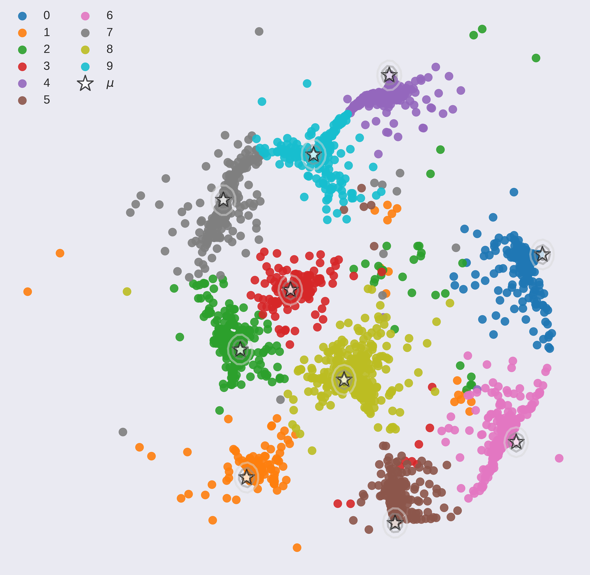

Interpreting black box classifiers, such as deep networks, allows an analyst to validate a classifier before it is deployed in a high-stakes setting. A natural idea is to visualize the deep network’s rep- resentations, so as to “see what the network sees”. In this paper, we demonstrate that standard dimension reduction methods in this setting can yield uninformative or even misleading visualizations. Instead, we present DarkSight, which visually summarizes the predictions of a classifier in a way inspired by notion of dark knowledge. DarkSight embeds the data points into a low-dimensional space such that it is easy to compress the deep classifier into a simpler one, essentially combining model compression and dimension reduction. We compare DarkSight against t-SNE both qualitatively and quantitatively, demonstrating that DarkSight visualizations are more informative. Our method additionally yields a new confidence measure based on dark knowledge by quantifying how unusual is a given vector of predictions.

Other than understanding decisions of the classifier, DarkSight can also help find outliers. This can be done by simply picking instances on the corner of the scatter plot or using a confidence measure based on density of DarkSight embedding. Some outliers detected are:
DarkSight is trained in O(N) and is GPU friendly. With the PyTorch implementation we provided in GitHub, DarkSight plot for a 10-class classifier on 10,000 instances can be generated within around 1.5 minutes with a single GPU.